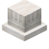

带槽饰的石英柱座
Fluted Quartz Column Plinth
英文名: Fluted Quartz Column Plinth命名空间 ID:
caupona:quartz_column_fluted_plinth类型: 方块所属模组: Caupona资料检索: 🔎 在 MC百科 搜索「带槽饰的石英柱座」合成获得 (1)
切石机Caupona

原始 JSON
{
"type": "stonecutting",
"ingredient": {
"item": "minecraft:quartz_block"
},
"result": {
"id": "caupona:quartz_column_fluted_plinth"
},
"count": 1
}